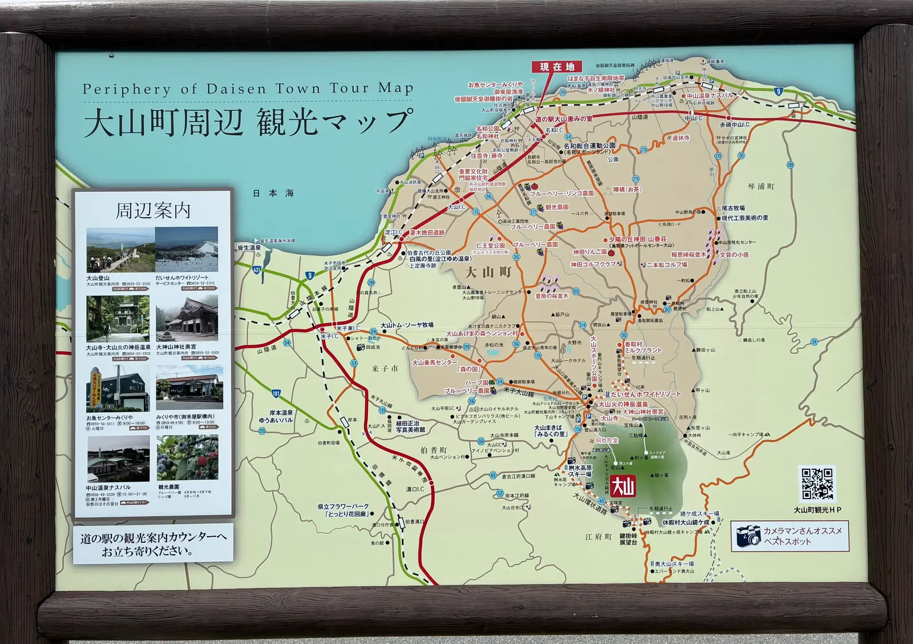
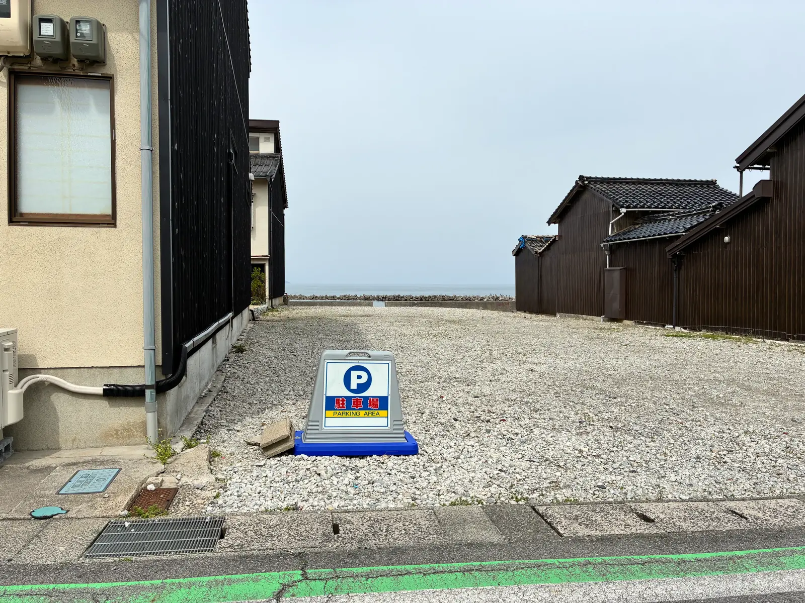

오시는 길
오사카・간사이 지역에서 약 3시간의 바닷가 리조트
교통 접근
자동차로 오시는 길
약 3시간
한신 고속 히가시오사카선에서 주고쿠도로 진입하여 북상한 후, 요나고도와 산인도를 경유하여 오시면 됩니다.
약 3시간
고베에서는 보다 직선적인 루트로 접근 가능합니다.
약 3시간
산요도에서 북상하여 요나고도를 경유하여 오시면 됩니다.
약 2.5시간
오카야마에서는 가장 접근하기 쉬운 루트입니다.
주차장: 건물 옆에 4대분의 무료 주차 공간이 있습니다.
전차로 오시는 길
나와역에서 걸어서 편하게 오실 수 있습니다. 역에서부터 본격적으로 즐기는 바닷가 별장 체험을 만끽하세요.
주소
〒689-3211
돗토리현 사이하쿠군 다이센초
미쿠리야 824
주차장
건물 옆에
4대분 무료
주차 공간 완비
좌표
북위 35.5091°
동경 133.4915°
동해까지 3m
숙소 위치
다이센초 주변 관광 지도
숙소 주변의 관광 명소와 교통 전체도를 확인하실 수 있습니다.

주변 명소
소박한 모래 해변이 특징인 해수욕장. 여름에는 많은 가족 단위 여행객으로 붐빕니다. 샤워 설비도 완비되어 있습니다.
겨울에는 스키・스노보드의 성지. 여름에도 봅슬레이 체험 등 가족을 위한 어트랙션이 충실합니다.
오랜 역사를 가진 고찰. 단풍 시즌은 특히 아름답고, 참배와 산책을 위해 방문하는 이들이 많습니다.
동해를 바라보는 온천 거리. 많은 호텔과 풍부한 온천수가 모여 있어 힐링의 시간을 보낼 수 있습니다.
바로 옆의 현역 어항. 신선한 지역 어류 직판장과 그 자리에서 먹을 수 있는 가게가 있어 현지의 맛을 즐길 수 있습니다.
나와 주변에는 슈퍼, 편의점, 홈센터 등이 충실합니다. 지역산 신선한 식재료도 구입할 수 있습니다.
계절별 즐기는 방법
- 봄: 산나물 요리, 신록의 산책
- 여름: 木料海岸 (기료 해안) 등에서의 해수욕, BBQ, 등산
- 가을: 다이센지의 단풍 구경, 단풍 드라이브
- 겨울: 스키・스노보드, 온천, 대게 등 겨울 미각
이용 전 안내
겨울철 이용 안내
겨울철(11월~3월)에는 적설이나 노면 동결의 우려가 있습니다. 스터드리스 타이어 장착 또는 체인 휴대를 강력히 권장합니다. 다이센지 방면으로 향하실 때는 특히 주의가 필요합니다.
내비게이션 설정
차량용 내비게이션에서는 '미쿠리야 824' 또는 좌표 '35.5091, 133.4915'로 검색해 주세요. 도착 시 마지막 T자 교차로를 좌회전한 앞에 있는 눈에 띄는 건물이 저희 숙소입니다.
주차장 이용 안내

건물 옆에 4대분의 무료 주차 공간이 있습니다. 추가 주차가 필요한 경우 사전에 문의해 주세요. 도착 시 안내도 해드립니다.
도착 시간 안내
체크인은 16:00부터입니다. 도착 예정 시간이 크게 달라지는 경우 사전에 연락해 주세요. 일찍 도착하시는 경우 주변 명소 투어를 추천합니다.